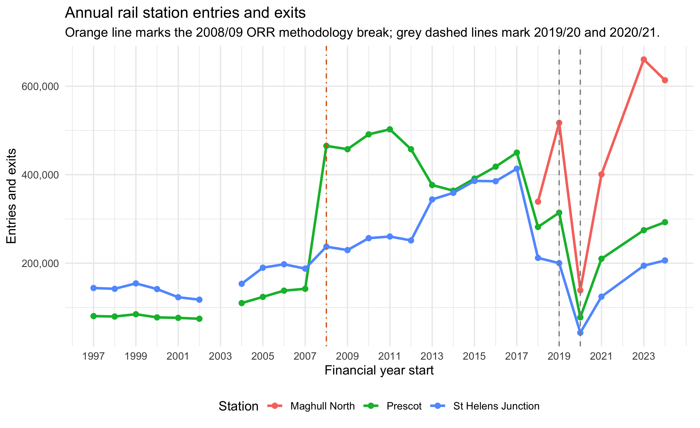
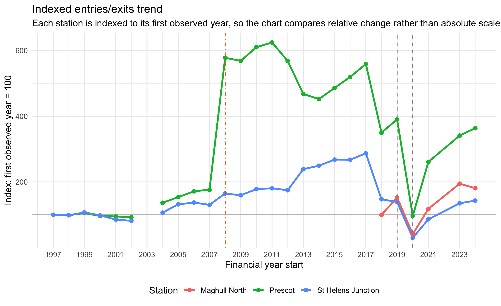
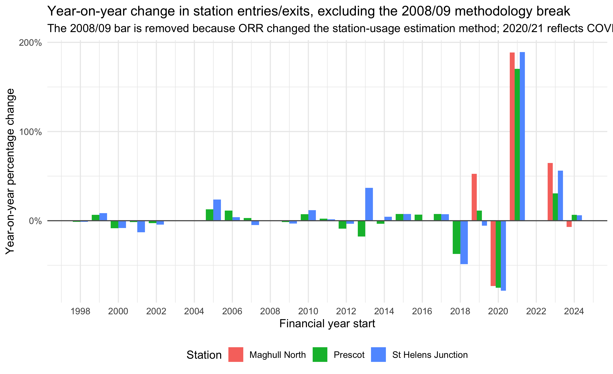
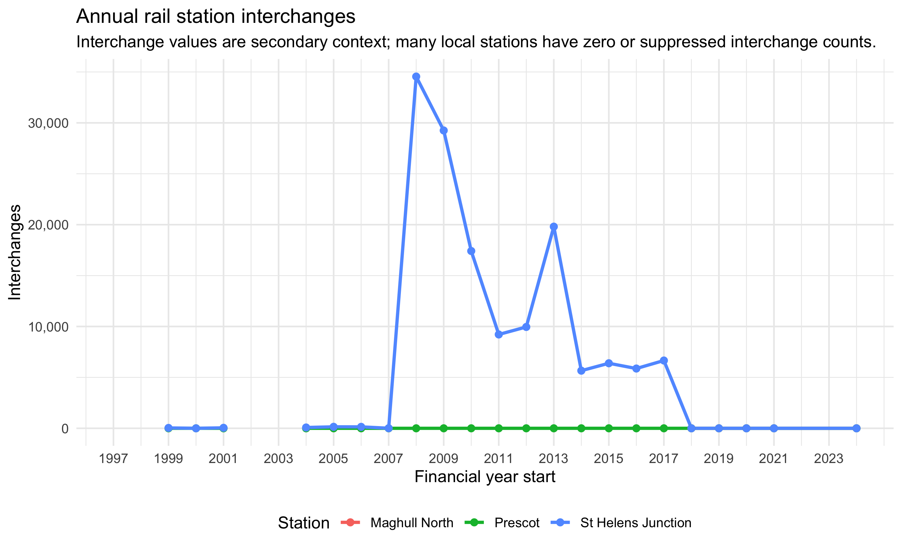

base_dir <- "/Users/lu_nanxi/CASA/Dissertation_Data"
source_ods <- file.path(
base_dir,
"source_documents",
"table-1415-time-series-of-passenger-entries-and-exits-and-interchanges-by-station.ods"
)
output_dir <- file.path(
base_dir,
"reports",
"analysis_reports",
"rail_station_time_series"
)
dir.create(output_dir, recursive = TRUE, showWarnings = FALSE)
target_stations <- c(
"Maghull North",
"Prescot",
"St Helens Junction"
)
liverpool_local_authority <- "Liverpool"
methodology_break_year <- 2008
lcr_local_authorities <- c(
"Liverpool",
"Knowsley",
"Sefton",
"St. Helens",
"Wirral",
"Halton"
)Liverpool City Region Rail Station Time-Series Context
ORR Table 1415 entries/exits and interchanges
Purpose
This document prepares a supplementary time-series view of rail station usage for selected Liverpool City Region stations. It uses Office of Rail and Road Table 1415 annual station entries/exits and interchanges, then filters a small set of relevant stations for descriptive comparison.
This rail analysis is contextual only. It does not replace the Vivacity sensor analysis and should not be interpreted as evidence of active-travel scheme impact. Its role is to show broader station-area movement trends and time differences across years.
The 2008/09 financial year is treated as a methodological break. ORR’s 2008/09 station usage report explains that the Origin-Destination Matrix was integrated with the MOIRA Demand Matrix and began including estimates for Passenger Transport Executive (PTE) area journeys that were not included in previous years. For Liverpool City Region stations, this means the 2008/09 jump should be flagged rather than interpreted as a direct behavioural change.
Station Selection
The default station list follows the current dissertation supplementary context workflow: Maghull North, Prescot, and St Helens Junction. These can be changed below if the supervisor asks for a different Liverpool/Liverpool City Region station set.
The report also extracts all stations whose ORR local authority is recorded as Liverpool. This gives a clearer city-level station subset alongside the smaller dissertation context set.
ODS Reader
The ODS file is read directly using xml2, avoiding an additional readODS dependency. The code below extracts repeated spreadsheet cells correctly enough for ORR Table 1415’s station tables.
ns <- c(
office = "urn:oasis:names:tc:opendocument:xmlns:office:1.0",
table = "urn:oasis:names:tc:opendocument:xmlns:table:1.0"
)
cell_text <- function(cell) {
paste(xml_text(cell), collapse = "") |> str_trim()
}
repeat_count <- function(node, attr_name) {
value <- xml_attr(node, attr_name)
if (is.na(value) || value == "") 1L else as.integer(value)
}
read_ods_sheet <- function(path, sheet_name) {
tmp <- tempfile(fileext = ".xml")
unzip(path, files = "content.xml", exdir = dirname(tmp))
content_path <- file.path(dirname(tmp), "content.xml")
doc <- read_xml(content_path)
tables <- xml_find_all(doc, ".//table:table", ns = ns)
sheet_index <- which(xml_attr(tables, "name") == sheet_name)
if (length(sheet_index) == 0) {
stop("Sheet not found: ", sheet_name)
}
rows <- xml_find_all(tables[[sheet_index[1]]], "table:table-row", ns = ns)
parsed <- lapply(rows, function(row) {
cells <- xml_find_all(row, "table:table-cell", ns = ns)
values <- character()
for (cell in cells) {
repeated <- repeat_count(cell, "number-columns-repeated")
txt <- cell_text(cell)
if (txt == "" && repeated > 50) repeated <- 1L
values <- c(values, rep(txt, repeated))
}
values
})
parsed[vapply(parsed, function(x) any(x != ""), logical(1))]
}
clean_number <- function(value) {
value <- as.character(value) |> str_trim()
value[value %in% c("", "[x]", "[z]", "[b]", "NA")] <- NA_character_
readr::parse_number(value)
}
table_to_long <- function(rows, metric) {
header_index <- which(vapply(
rows,
function(row) length(row) >= 3 &&
row[1] == "Sort" &&
row[2] == "Station name" &&
row[3] == "Three Letter Code(TLC)",
logical(1)
))[1]
if (is.na(header_index)) {
stop("Could not find ORR station table header.")
}
headers <- rows[[header_index]]
year_cols <- which(str_detect(headers, "^Apr \\d{4} to Mar \\d{4}$"))
out <- list()
out_i <- 1L
for (row in rows[(header_index + 1):length(rows)]) {
if (length(row) < 6) next
station_name <- row[2]
if (is.na(station_name) || station_name == "") next
for (idx in year_cols) {
label <- headers[idx]
start_year <- as.integer(str_match(label, "Apr (\\d{4}) to Mar (\\d{4})")[, 2])
value <- if (idx <= length(row)) row[idx] else ""
out[[out_i]] <- tibble(
station_name = station_name,
three_letter_code = row[3],
national_location_code = row[4],
region = row[5],
local_authority = row[6],
financial_year = paste0(start_year, "/", str_sub(as.character(start_year + 1), -2)),
financial_year_start = start_year,
metric = metric,
value = clean_number(value),
raw_value = value
)
out_i <- out_i + 1L
}
}
bind_rows(out)
}Build Rail Time Series
entries <- read_ods_sheet(source_ods, "1415a_Entries_and_Exits") |>
table_to_long("entries_and_exits")
interchanges <- read_ods_sheet(source_ods, "1415b_Interchanges") |>
table_to_long("interchanges")
rail_long_all <- bind_rows(entries, interchanges)
station_inventory <- rail_long_all |>
filter(local_authority %in% lcr_local_authorities) |>
distinct(station_name, three_letter_code, national_location_code, region, local_authority) |>
arrange(local_authority, station_name)
liverpool_station_inventory <- station_inventory |>
filter(local_authority == liverpool_local_authority) |>
arrange(station_name)
rail_long <- rail_long_all |>
filter(station_name %in% target_stations) |>
mutate(
metric_label = recode(
metric,
entries_and_exits = "Entries and exits",
interchanges = "Interchanges"
)
) |>
arrange(station_name, metric, financial_year_start)
liverpool_long <- rail_long_all |>
filter(local_authority == liverpool_local_authority) |>
mutate(
metric_label = recode(
metric,
entries_and_exits = "Entries and exits",
interchanges = "Interchanges"
)
) |>
arrange(station_name, metric, financial_year_start)
rail_wide <- rail_long |>
select(
station_name, three_letter_code, national_location_code, region,
local_authority, financial_year, financial_year_start, metric, value, raw_value
) |>
pivot_wider(
names_from = metric,
values_from = c(value, raw_value),
names_glue = "{metric}_{.value}"
) |>
arrange(station_name, financial_year_start)
liverpool_wide <- liverpool_long |>
select(
station_name, three_letter_code, national_location_code, region,
local_authority, financial_year, financial_year_start, metric, value, raw_value
) |>
pivot_wider(
names_from = metric,
values_from = c(value, raw_value),
names_glue = "{metric}_{.value}"
) |>
arrange(station_name, financial_year_start)
readr::write_csv(station_inventory, file.path(output_dir, "lcr_station_inventory_from_orr_1415.csv"))
readr::write_csv(liverpool_station_inventory, file.path(output_dir, "liverpool_local_authority_station_inventory_from_orr_1415.csv"))
readr::write_csv(rail_long, file.path(output_dir, "selected_liverpool_region_station_usage_long.csv"))
readr::write_csv(rail_wide, file.path(output_dir, "selected_liverpool_region_station_usage_wide.csv"))
readr::write_csv(liverpool_long, file.path(output_dir, "liverpool_local_authority_station_usage_long.csv"))
readr::write_csv(liverpool_wide, file.path(output_dir, "liverpool_local_authority_station_usage_wide.csv"))
station_inventory |>
filter(station_name %in% target_stations) |>
kable(caption = "Selected station metadata")| station_name | three_letter_code | national_location_code | region | local_authority |
|---|---|---|---|---|
| Prescot | PSC | 2337 | North West | Knowsley |
| Maghull North | MNS | 6576 | North West | Sefton |
| St Helens Junction | SHJ | 2340 | North West | St. Helens |
Liverpool Station Subset
The table below confirms the stations filtered from ORR Table 1415 where the local authority is Liverpool. This is useful if the analysis needs to describe Liverpool city stations separately from the wider Liverpool City Region context stations.
liverpool_station_inventory |>
kable(caption = "Liverpool local-authority stations identified in ORR Table 1415")| station_name | three_letter_code | national_location_code | region | local_authority |
|---|---|---|---|---|
| Aigburth | AIG | 2255 | North West | Liverpool |
| Bank Hall | BAH | 2238 | North West | Liverpool |
| Broad Green | BGE | 2240 | North West | Liverpool |
| Brunswick | BRW | 3623 | North West | Liverpool |
| Cressington | CSG | 2225 | North West | Liverpool |
| Edge Hill | EDG | 2169 | North West | Liverpool |
| Fazakerley | FAZ | 2126 | North West | Liverpool |
| Hunts Cross | HNX | 2235 | North West | Liverpool |
| Kirkdale | KKD | 2245 | North West | Liverpool |
| Liverpool Central | LVC | 2242 | North West | Liverpool |
| Liverpool James Street | LVJ | 2244 | North West | Liverpool |
| Liverpool Lime Street | LIV | 2246 | North West | Liverpool |
| Liverpool South Parkway | LPY | 9709 | North West | Liverpool |
| Moorfields | MRF | 2226 | North West | Liverpool |
| Mossley Hill | MSH | 2171 | North West | Liverpool |
| Orrell Park | OPK | 2247 | North West | Liverpool |
| Rice Lane | RIL | 2131 | North West | Liverpool |
| Sandhills | SDL | 2249 | North West | Liverpool |
| St Michaels | STM | 2248 | North West | Liverpool |
| Walton (Merseyside) | WAO | 2251 | North West | Liverpool |
| Wavertree Technology Park | WAV | 8589 | North West | Liverpool |
| West Allerton | WSA | 2266 | North West | Liverpool |
Data Coverage
coverage <- rail_long |>
group_by(station_name, local_authority, metric_label) |>
summarise(
first_year = min(financial_year_start[!is.na(value)], na.rm = TRUE),
last_year = max(financial_year_start[!is.na(value)], na.rm = TRUE),
observed_years = sum(!is.na(value)),
missing_or_suppressed_years = sum(is.na(value)),
.groups = "drop"
) |>
mutate(
first_year = if_else(is.infinite(first_year), NA_integer_, first_year),
last_year = if_else(is.infinite(last_year), NA_integer_, last_year)
)
coverage |>
kable(caption = "Annual data coverage for selected stations and metrics")| station_name | local_authority | metric_label | first_year | last_year | observed_years | missing_or_suppressed_years |
|---|---|---|---|---|---|---|
| Maghull North | Sefton | Entries and exits | 2018 | 2024 | 6 | 21 |
| Maghull North | Sefton | Interchanges | 2018 | 2024 | 5 | 21 |
| Prescot | Knowsley | Entries and exits | 1997 | 2024 | 26 | 1 |
| Prescot | Knowsley | Interchanges | 1999 | 2024 | 22 | 4 |
| St Helens Junction | St. Helens | Entries and exits | 1997 | 2024 | 26 | 1 |
| St Helens Junction | St. Helens | Interchanges | 1999 | 2024 | 22 | 4 |
Overall Trends
entries_plot_data <- rail_long |>
filter(metric == "entries_and_exits")
p_entries <- ggplot(entries_plot_data, aes(financial_year_start, value, colour = station_name)) +
geom_line(linewidth = 1.1, na.rm = TRUE) +
geom_point(size = 2, na.rm = TRUE) +
geom_vline(xintercept = methodology_break_year, linetype = "dotdash", colour = "#D95F02") +
geom_vline(xintercept = c(2019, 2020), linetype = "dashed", colour = "grey55") +
scale_y_continuous(labels = comma) +
scale_x_continuous(breaks = seq(1997, 2024, by = 2)) +
labs(
title = "Annual rail station entries and exits",
subtitle = "Orange line marks the 2008/09 ORR methodology break; grey dashed lines mark 2019/20 and 2020/21.",
x = "Financial year start",
y = "Entries and exits",
colour = "Station"
) +
theme_minimal(base_size = 12) +
theme(legend.position = "bottom")
p_entries
ggsave(
file.path(output_dir, "rail_station_entries_exits_trend.png"),
p_entries,
width = 10,
height = 6,
dpi = 180
)Indexed Comparison
Raw passenger counts differ substantially across stations. The indexed chart below shows the relative pattern by setting each station’s first observed entries/exits value to 100.
indexed_entries <- entries_plot_data |>
group_by(station_name) |>
arrange(financial_year_start, .by_group = TRUE) |>
mutate(
first_observed_value = first(value[!is.na(value)]),
indexed_to_first_observed = value / first_observed_value * 100
) |>
ungroup()
p_indexed <- ggplot(indexed_entries, aes(financial_year_start, indexed_to_first_observed, colour = station_name)) +
geom_hline(yintercept = 100, colour = "grey75") +
geom_line(linewidth = 1.1, na.rm = TRUE) +
geom_point(size = 2, na.rm = TRUE) +
geom_vline(xintercept = methodology_break_year, linetype = "dotdash", colour = "#D95F02") +
geom_vline(xintercept = c(2019, 2020), linetype = "dashed", colour = "grey55") +
scale_x_continuous(breaks = seq(1997, 2024, by = 2)) +
labs(
title = "Indexed entries/exits trend",
subtitle = "Each station is indexed to its first observed year, so the chart compares relative change rather than absolute scale.",
x = "Financial year start",
y = "Index: first observed year = 100",
colour = "Station"
) +
theme_minimal(base_size = 12) +
theme(legend.position = "bottom")
p_indexed
ggsave(
file.path(output_dir, "rail_station_entries_exits_indexed_trend.png"),
p_indexed,
width = 10,
height = 6,
dpi = 180
)Year-on-Year Change
The year-on-year chart excludes the 2008/09 percentage-change bar because it compares values before and after an ORR methodology change. The raw 2008/09 values remain in the long and wide data outputs, but the visual trend should not present that discontinuity as normal growth.
yoy_entries <- entries_plot_data |>
group_by(station_name) |>
arrange(financial_year_start, .by_group = TRUE) |>
mutate(
previous_value = lag(value),
yoy_absolute_change = value - previous_value,
yoy_percent_change = (value / previous_value - 1) * 100,
exclude_from_yoy_chart = financial_year_start == methodology_break_year
) |>
ungroup()
methodology_break_values <- yoy_entries |>
filter(exclude_from_yoy_chart) |>
select(
station_name,
financial_year,
previous_value,
value,
yoy_absolute_change,
yoy_percent_change
)
readr::write_csv(
methodology_break_values,
file.path(output_dir, "rail_station_2008_methodology_break_values.csv")
)
methodology_break_values |>
mutate(
across(c(previous_value, value, yoy_absolute_change), comma),
yoy_percent_change = round(yoy_percent_change, 2)
) |>
kable(caption = "2008/09 values retained but excluded from the YoY chart")| station_name | financial_year | previous_value | value | yoy_absolute_change | yoy_percent_change |
|---|---|---|---|---|---|
| Maghull North | 2008/09 | NA | NA | NA | NA |
| Prescot | 2008/09 | 142,182 | 465,108 | 322,926 | 227.12 |
| St Helens Junction | 2008/09 | 187,794 | 237,394 | 49,600 | 26.41 |
p_yoy <- yoy_entries |>
filter(!is.na(yoy_percent_change), !exclude_from_yoy_chart) |>
ggplot(aes(financial_year_start, yoy_percent_change, fill = station_name)) +
geom_col(position = "dodge", width = 0.8) +
geom_hline(yintercept = 0, colour = "grey35") +
scale_y_continuous(labels = label_percent(scale = 1)) +
scale_x_continuous(breaks = seq(1998, 2024, by = 2)) +
labs(
title = "Year-on-year change in station entries/exits, excluding the 2008/09 methodology break",
subtitle = "The 2008/09 bar is removed because ORR changed the station-usage estimation method; 2020/21 reflects COVID-19 disruption.",
x = "Financial year start",
y = "Year-on-year percentage change",
fill = "Station"
) +
theme_minimal(base_size = 12) +
theme(legend.position = "bottom")
p_yoy
ggsave(
file.path(output_dir, "rail_station_entries_exits_yoy_change.png"),
p_yoy,
width = 10,
height = 6,
dpi = 180
)Pre-Pandemic and Latest-Year Comparison
station_summary <- entries_plot_data |>
group_by(station_name, local_authority) |>
summarise(
first_observed_year = financial_year_start[which(!is.na(value))[1]],
first_observed_entries_exits = first(value[!is.na(value)]),
pre_pandemic_2019_20 = value[financial_year_start == 2019][1],
pandemic_2020_21 = value[financial_year_start == 2020][1],
latest_year = max(financial_year_start[!is.na(value)], na.rm = TRUE),
latest_entries_exits = value[financial_year_start == latest_year][1],
.groups = "drop"
) |>
mutate(
pandemic_drop_from_2019_20 = pandemic_2020_21 - pre_pandemic_2019_20,
pandemic_drop_percent = (pandemic_2020_21 / pre_pandemic_2019_20 - 1) * 100,
latest_vs_2019_20 = latest_entries_exits - pre_pandemic_2019_20,
latest_vs_2019_20_percent = (latest_entries_exits / pre_pandemic_2019_20 - 1) * 100,
latest_vs_first_observed_percent = (latest_entries_exits / first_observed_entries_exits - 1) * 100
) |>
arrange(desc(latest_entries_exits))
readr::write_csv(station_summary, file.path(output_dir, "rail_station_entries_exits_summary.csv"))
station_summary |>
mutate(across(where(is.numeric), ~ round(.x, 2))) |>
kable(caption = "Station-level change summary")| station_name | local_authority | first_observed_year | first_observed_entries_exits | pre_pandemic_2019_20 | pandemic_2020_21 | latest_year | latest_entries_exits | pandemic_drop_from_2019_20 | pandemic_drop_percent | latest_vs_2019_20 | latest_vs_2019_20_percent | latest_vs_first_observed_percent |
|---|---|---|---|---|---|---|---|---|---|---|---|---|
| Maghull North | Sefton | 2018 | 339066 | 517166 | 138794 | 2024 | 613510 | -378372 | -73.16 | 96344 | 18.63 | 80.94 |
| Prescot | Knowsley | 1997 | 80512 | 314180 | 77728 | 2024 | 292684 | -236452 | -75.26 | -21496 | -6.84 | 263.53 |
| St Helens Junction | St. Helens | 1997 | 144012 | 200212 | 43018 | 2024 | 206320 | -157194 | -78.51 | 6108 | 3.05 | 43.27 |
Interchanges
interchange_plot_data <- rail_long |>
filter(metric == "interchanges")
p_interchanges <- ggplot(interchange_plot_data, aes(financial_year_start, value, colour = station_name)) +
geom_line(linewidth = 1.1, na.rm = TRUE) +
geom_point(size = 2, na.rm = TRUE) +
scale_y_continuous(labels = comma) +
scale_x_continuous(breaks = seq(1997, 2024, by = 2)) +
labs(
title = "Annual rail station interchanges",
subtitle = "Interchange values are secondary context; many local stations have zero or suppressed interchange counts.",
x = "Financial year start",
y = "Interchanges",
colour = "Station"
) +
theme_minimal(base_size = 12) +
theme(legend.position = "bottom")
p_interchanges
ggsave(
file.path(output_dir, "rail_station_interchanges_trend.png"),
p_interchanges,
width = 10,
height = 6,
dpi = 180
)Interpretation Progress Notes
cat("### Current interpretation\\n\\n")Current interpretation
cat("- The selected rail station series provide broad annual movement context, not street-level active-travel evidence.\\n")- The selected rail station series provide broad annual movement context, not street-level active-travel evidence.
cat("- Entries and exits show long-term station-specific differences: some stations have long continuous histories, while Maghull North only has observed values from its opening period onward.\\n")- Entries and exits show long-term station-specific differences: some stations have long continuous histories, while Maghull North only has observed values from its opening period onward.
cat("- The 2020/21 financial year shows a clear disruption across stations, consistent with pandemic-era rail demand collapse.\\n")- The 2020/21 financial year shows a clear disruption across stations, consistent with pandemic-era rail demand collapse.
cat("- Later years can be used to discuss recovery relative to 2019/20, but this should remain contextual rather than causal evidence for active-travel schemes.\\n")- Later years can be used to discuss recovery relative to 2019/20, but this should remain contextual rather than causal evidence for active-travel schemes.
cat("- The Vivacity analysis remains the main dataset for walking and cycling trajectories; station usage is best reported as supplementary background.\\n")- The Vivacity analysis remains the main dataset for walking and cycling trajectories; station usage is best reported as supplementary background.
Output Files
list.files(output_dir, full.names = TRUE) |>
tibble(file = _) |>
kable(caption = "Files written by this Rmd")| file |
|---|
| /Users/lu_nanxi/CASA/Dissertation_Data/reports/analysis_reports/rail_station_time_series/lcr_station_inventory_from_orr_1415.csv |
| /Users/lu_nanxi/CASA/Dissertation_Data/reports/analysis_reports/rail_station_time_series/liverpool_local_authority_entries_exits_facets.png |
| /Users/lu_nanxi/CASA/Dissertation_Data/reports/analysis_reports/rail_station_time_series/liverpool_local_authority_latest_entries_exits_ranking.csv |
| /Users/lu_nanxi/CASA/Dissertation_Data/reports/analysis_reports/rail_station_time_series/liverpool_local_authority_latest_entries_exits_ranking.png |
| /Users/lu_nanxi/CASA/Dissertation_Data/reports/analysis_reports/rail_station_time_series/liverpool_local_authority_station_inventory_from_orr_1415.csv |
| /Users/lu_nanxi/CASA/Dissertation_Data/reports/analysis_reports/rail_station_time_series/liverpool_local_authority_station_usage_long.csv |
| /Users/lu_nanxi/CASA/Dissertation_Data/reports/analysis_reports/rail_station_time_series/liverpool_local_authority_station_usage_wide.csv |
| /Users/lu_nanxi/CASA/Dissertation_Data/reports/analysis_reports/rail_station_time_series/rail_station_2008_methodology_break_values.csv |
| /Users/lu_nanxi/CASA/Dissertation_Data/reports/analysis_reports/rail_station_time_series/rail_station_entries_exits_indexed_trend.png |
| /Users/lu_nanxi/CASA/Dissertation_Data/reports/analysis_reports/rail_station_time_series/rail_station_entries_exits_summary.csv |
| /Users/lu_nanxi/CASA/Dissertation_Data/reports/analysis_reports/rail_station_time_series/rail_station_entries_exits_trend.png |
| /Users/lu_nanxi/CASA/Dissertation_Data/reports/analysis_reports/rail_station_time_series/rail_station_entries_exits_yoy_change.png |
| /Users/lu_nanxi/CASA/Dissertation_Data/reports/analysis_reports/rail_station_time_series/rail_station_interchanges_trend.png |
| /Users/lu_nanxi/CASA/Dissertation_Data/reports/analysis_reports/rail_station_time_series/selected_liverpool_region_station_usage_long.csv |
| /Users/lu_nanxi/CASA/Dissertation_Data/reports/analysis_reports/rail_station_time_series/selected_liverpool_region_station_usage_wide.csv |